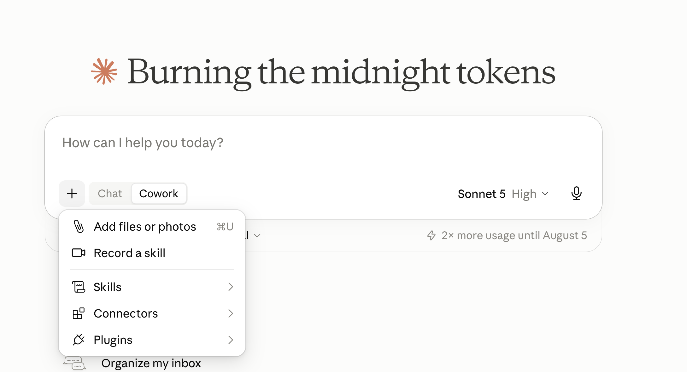
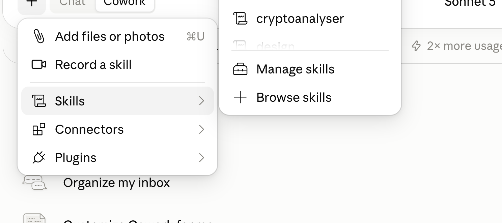
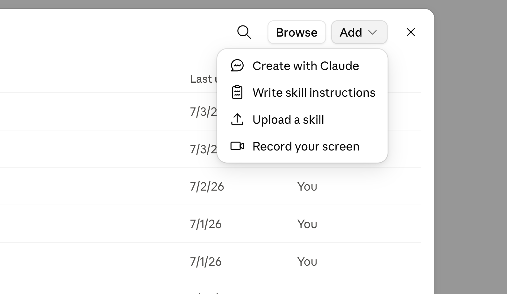
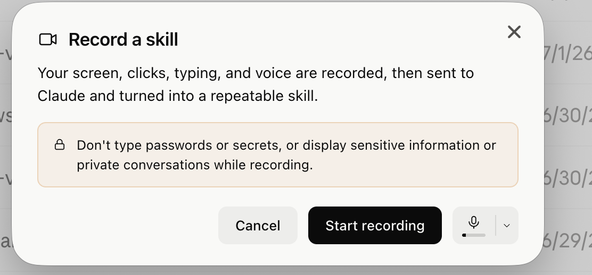

Steps 01–03
Open Cowork and find Skills
Open the Claude desktop app, select Cowork, click the + menu, then select Skills.

Step 04
Open Manage skills
In the Skills submenu, click Manage skills.

Steps 05–06
Add a screen recording
Click Add at the top of the skills manager, then select Record your screen.

Steps 07–08
Start recording and demonstrate the task
Choose your microphone setting, click Start recording, and complete the workflow exactly as you want Claude to repeat it. Narrate important decisions and exceptions as you go.

Privacy check: Close private conversations and sensitive files first. Never type passwords, secrets, or confidential information while recording.